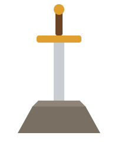

Добро пожаловать, безымянный!
Ты победил Спящего, пролежал несколько недель под завалами и потерял всё: опыт, доспехи и даже умение нормально махать мечом. Имя ты, впрочем, и раньше никому не говорил.
Не беда! Этот путеводитель поможет снова стать героем. Начни со страницы «Бестиарий», чтобы знать, от кого убегать.
Что тебя ждёт
- Город Хоринис, где за вход просят то денег, то документы.
- Старые друзья: Диего, Милтен, Горн и Лестер.
- Драконы в Долине Рудников. Да, сразу несколько.
- Выбор пути: ополчение, наёмники или монастырь магов огня.